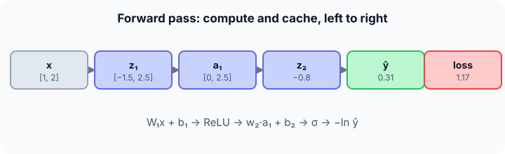

Prerequisites
- The MLP (same network and numbers).
- Loss functions: cross-entropy.
- Function composition: $f(g(x))$.
The analogy
Everyday analogy
Think of an assembly line: raw material enters, each station transforms it and passes it on, and quality control checks the final product. Each station keeps a note of what it did.
Forward propagation is that line: each layer transforms the previous layer's output, and the loss is the quality check. The notes are needed later to find which station caused a defect.
How it works
Order of operations: for each layer $\ell$: $z_\ell = W_\ell\, a_{\ell - 1} + b_\ell$, then $a_\ell = g_\ell(z_\ell)$, starting from $a_0 = x$; finally compute the loss $L(a_{\text{last}}, y)$. Store every $z_\ell$ and $a_\ell$.
Start with the ordered steps by hand
Same network as on the MLP page; true label $y = 1$, binary cross-entropy loss. Predict, then open "Check".
Example: predict before you read
Step 1. Steps 1–2: $z_1 = W_1 x + b_1$ and $a_1 = \text{ReLU}(z_1)$.
Check
$z_1 = [-1.5, 2.5]$, $a_1 = [0, 2.5]$.
Step 2. Cover the next line and guess: steps 3–4, $z_2 = w_2 \cdot a_1 + b_2$ and $\hat y = \sigma(z_2)$.
Check
$z_2 = -0.8$, $\hat y \approx 0.310$.
Step 3. Step 5: the loss $L = -\ln \hat y$ (since $y = 1$).
Check
$-\ln 0.310 \approx 1.17$: a large loss, because the network gave the true class only 31%.

Quick recall: Before reading further, cover the text above and say out loud: why must the steps happen in this exact order?
Check your answer
Each value is computed from the previous one: $a_1$ needs $z_1$, $z_2$ needs $a_1$, and so on.
Finish the picture: batches
Now feed two inputs together, $x^{(1)} = [1, 2]$ and $x^{(2)} = [2, 0]$, both with $y = 1$.
- Predictions. Predict $\hat y$ for each (use the MLP page if needed).
Check
0.31 and 0.55.
- Batch loss. Predict the average loss.
Check
$(-\ln 0.31 - \ln 0.55)/2 \approx (1.17 + 0.60)/2 \approx 0.89$.
Quick recall: Without scrolling up, say out loud: what changes when you process a batch of 32 inputs at once?
Check your answer
The input becomes a $32 \times 2$ matrix, so each step is a matrix–matrix product; the order of steps is the same, and the loss is averaged over the batch.
Full worked calculation
Forward propagation for a whole mini-batch at once, as real frameworks do it. Same network ($W_1 = \begin{bmatrix} 0.5 & -1 \\ 1 & 0.5 \end{bmatrix}$, $b_1 = [0, 0.5]$, $w_2 = [1, -0.4]$, $b_2 = 0.2$), batch of two examples, labels $y = [1, 0]$.
| Example | $x$ | $z_1$ | $a_1$ | $z_2$ | $\hat y$ | $y$ | Loss |
|---|---|---|---|---|---|---|---|
| 1 | [1, 2] | [−1.5, 2.5] | [0, 2.5] | −0.8 | 0.310 | 1 | 1.171 |
| 2 | [2, 0] | [1, 2.5] | [1, 2.5] | 0.2 | 0.550 | 0 | 0.798 |
| Mean | 0.985 |
-
1Stack the batch into a matrix
$$X = \begin{bmatrix} 1 & 2 \\ 2 & 0 \end{bmatrix} \qquad (\text{one row per example})$$Instead of looping over examples, we put them in rows of one matrix. A single matrix product then processes the whole batch, which is what GPUs are fast at.
-
2Layer 1: linear part
$$Z_1 = X W_1^\top + b_1 = \begin{bmatrix} 0.5 - 2 & 1 + 1 \\ 1 - 0 & 2 + 0 \end{bmatrix} + [0, 0.5] = \begin{bmatrix} -1.5 & 2.5 \\ 1 & 2.5 \end{bmatrix}$$Entry $(i, j)$ is "example $i$, hidden neuron $j$". The bias row is added to every row (broadcasting).
-
3Layer 1: activation
$$A_1 = \text{ReLU}(Z_1) = \begin{bmatrix} 0 & 2.5 \\ 1 & 2.5 \end{bmatrix}$$ReLU is applied entry by entry. Keep $Z_1$ in memory: backpropagation needs to know which entries were negative (here only −1.5).
-
4Layer 2
$$z_2 = A_1 w_2 + b_2 = [0 - 1 + 0.2,\; 1 - 1 + 0.2] = [-0.8,\; 0.2], \qquad \hat y = \sigma(z_2) = [0.310,\; 0.550]$$One output per example. Example 1 should be 1 but gets 0.31; example 2 should be 0 but gets 0.55. Both are wrong side of 0.5.
-
5Loss per example
$$L_1 = -\ln 0.310 = 1.171, \qquad L_2 = -\ln(1 - 0.550) = -\ln 0.450 = 0.798$$Binary cross-entropy: for a label of 1 use $-\ln \hat y$, for a label of 0 use $-\ln(1 - \hat y)$. Example 1 is more confidently wrong, so it costs more.
-
6Batch loss
$$L = \frac{1.171 + 0.798}{2} \approx 0.985$$Averaging over the batch makes the loss independent of the batch size. This single number is what backpropagation will differentiate.
What the numbers tell us
Forward propagation is a fixed sequence: linear, activation, linear, activation, loss. For the batch it took two matrix products and gave a mean loss of 0.985.
Every intermediate ($Z_1$, $A_1$, $z_2$, $\hat y$) is stored, because the backward pass reuses all of them.
The rule in plain words
Set $a_0 = x$. For each layer in order: compute $z_\ell = W_\ell a_{\ell - 1} + b_\ell$, then $a_\ell = g_\ell(z_\ell)$, and store both.
After the last layer, compute the loss against the target. Average over the batch.
Quick recall: Before you read the code, list what a forward pass must store, in your own words. Then check below.
Check your answer
Every pre-activation $z$ and activation $a$ of every layer (plus the input), because backpropagation needs them to compute gradients.
The code
Read this code after you have done the steps by hand. It will make more sense.
double forward(double W1[][2], double b1[], double w2[], double b2, double x[], int y,
double z1[], double a1[]) { /* fills the cache, returns the loss */
for (int i = 0; i < 2; i++) {
z1[i] = b1[i] + W1[i][0] * x[0] + W1[i][1] * x[1]; /* step 1: z1 */
a1[i] = z1[i] > 0 ? z1[i] : 0; /* step 2: ReLU */
}
double z2 = b2 + w2[0] * a1[0] + w2[1] * a1[1]; /* step 3 */
double p = 1 / (1 + exp(-z2)); /* step 4: sigmoid */
return y ? -log(p) : -log(1 - p); /* step 5: loss */
}Definition
What you just did, in one line: forward propagation computes a network's output and loss by applying each layer in order, $z_\ell = W_\ell a_{\ell-1} + b_\ell$, $a_\ell = g(z_\ell)$, storing the intermediate values for backpropagation.
flowchart LR
X["a0 = x"] --> Z1["z1 = W1 a0 + b1"]
Z1 --> A1["a1 = ReLU(z1)"]
A1 --> Z2["z2 = w2 · a1 + b2"]
Z2 --> Y["ŷ = sigmoid(z2)"]
Y --> L["L = loss(ŷ, y)"]
Putting numbers on it
Quick recall: Before looking at the formula, predict: what would the loss be if the true label were 0?
Check your answer
$-\ln(1 - 0.31) = -\ln 0.69 \approx 0.37$: much smaller, since the network leaned towards class 0.
The whole forward pass as one composition, with our numbers:
$$L = -\ln \sigma\big(w_2^\top \,\text{ReLU}(W_1 x + b_1) + b_2\big) = -\ln \sigma(-0.8) \approx 1.17$$| Step | Operation | Value | Cost (layer $n_{\text{in}} \to n_{\text{out}}$) |
|---|---|---|---|
| 1 | $z_1 = W_1 x + b_1$ | $[-1.5, 2.5]$ | $O(n_{\text{in}} n_{\text{out}})$ |
| 2 | $a_1 = \text{ReLU}(z_1)$ | $[0, 2.5]$ | $O(n_{\text{out}})$ |
| 3 | $z_2 = w_2^\top a_1 + b_2$ | $-0.8$ | $O(n_{\text{in}} n_{\text{out}})$ |
| 4 | $\hat y = \sigma(z_2)$ | $0.31$ | $O(1)$ |
| 5 | $L = -\ln \hat y$ | $1.17$ | $O(1)$ |
Warning
During training you must keep the cached values; at inference time you don't need them, which is why prediction uses much less memory than training (no cache, no gradients).
Exam tip
Write the forward pass as a numbered list of $z$ and $a$ per layer, with numbers. Exams then usually continue with "now compute the gradient", which needs exactly those values.
Common mistakes
- Applying the activation before adding the bias.
- Forgetting to store $z$ values, which are needed for the activation's derivative in backpropagation.
- Using the sigmoid output to compute the loss for the wrong class (forgetting $1 - \hat y$ when $y = 0$).
Try it yourself
Exercise 1 (warm-up)
For the same network and $x = [1, 2]$, compute the loss if the true label is 0.
Hint
Use $1 - \hat y$.
Answer
$-\ln(1 - 0.31) \approx 0.37$.
Exercise 2 (a bit harder)
Change $b_2$ from 0.2 to 1.0. Recompute $z_2$, $\hat y$ and the loss for $y = 1$. Write your answer down before you open it.
Show answer
$z_2 = 0 - 1 + 1 = 0$, $\hat y = 0.5$, loss $= -\ln 0.5 \approx 0.69$: better than 1.17, since the network moved towards the true class.
Did you know?
Did you know?
A modern GPU performs trillions of multiply-adds per second, and the forward pass of a network is almost entirely matrix multiplications, which is exactly what GPUs are built for.
Frameworks like PyTorch record each operation of the forward pass in a computation graph, so the backward pass can be generated automatically.
Key points to remember
If you remember one thing from each line, remember the because.
- The order is fixed because each layer's input is the previous layer's output.
- Intermediate values are cached because backpropagation needs them to compute gradients.
- The loss is the last step because it compares the final prediction with the target.
- Batches are processed together because matrix–matrix products use hardware efficiently.
- Inference needs less memory because no cache or gradients are kept.
Self-check questions
Answer these in order, out loud. They follow the page, so your answers become the script of your video.
- How is forward propagation like an assembly line?
Sample answer
Each station transforms the product and passes it on, quality control checks the result, and each station keeps notes for later.
- List the five forward steps for $x = [1, 2]$ with their values.
Sample answer
$z_1 = [-1.5, 2.5]$, $a_1 = [0, 2.5]$, $z_2 = -0.8$, $\hat y = 0.31$, loss $= 1.17$ (for $y = 1$).
- Why does
forwardwritez1anda1into arrays passed by the caller?A good answer mentions the backward pass.
Sample answer
Those arrays are the cache: the caller keeps them so backpropagation can use $z_1$ (for the ReLU slope) and $a_1$ (for the output weights' gradient).
- So what is forward propagation, in one sentence?
Sample answer
Computing a network's output and loss by applying the layers in order and storing the intermediate values.
- Why is the loss smaller when the true label is 0 here?
A good answer uses $\hat y = 0.31$.
Sample answer
The network gave 0.69 to class 0, and $-\ln 0.69 \approx 0.37$ is much smaller than $-\ln 0.31 \approx 1.17$.
- What does a forward pass cost per layer?
Sample answer
$O(n_{\text{in}} n_{\text{out}})$ multiply-adds for the matrix product, plus $O(n_{\text{out}})$ for the activation.
- Why does training use more memory than inference?
Sample answer
Training stores every intermediate value and the gradients; inference just passes values forward and discards them.
- If you had to teach this to a friend in 2 minutes, what would you leave out, and why?
Sample answer
I'd leave out batches and memory. I'd keep the assembly-line analogy, the five numbered steps with values, and "compute in order, cache everything, end with the loss".
External resources
- Neural Networks and Deep Learning, chapter 2: the forward and backward pass, step by step.
- Stanford CS231n: Backpropagation intuitions: computational graphs for forward and backward.
- PyTorch tutorial: Build the neural network: defining
forwardin practice.
Videos
- YouTube search: forward propagation step by step: pick a worked numeric example.